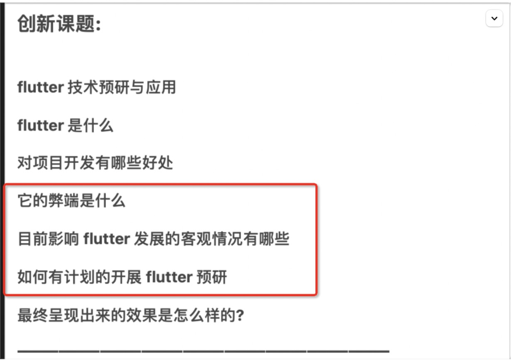

预研

Flutter弊端
 ◦ UI的代码和逻辑代码混在一起，结构划分不清晰，维护成本变高
 ◦ 代码可读性较差，对代码质量和管理要求较高；
 ◦ 脱离不开原生原生代码，开发人员需要具备原生（Android、iOS）基础开发能力；
 ◦ 目前几乎没有第三方开发者平台开发Flutter能力的SDK，需要原生去集成、原生数据通讯问题；
 ◦ Widget种类繁多，不同功能、成员开发过程中难以统一；
 ◦ 打包后，apk/ipa要大很多。
 ◦

影响发展情况
Dart语言的单一性， 目前 Dart 语言主要还是使用在flutter开发， 选择学习的新手有所顾忌

无法摆脱原生开发

第三方厂商SDK的限制

开展计划

1、混编集成Flutter SDK
2、打包测试包体积大小对比
3、集成包机型兼容性测试
4、flutter 与原生数据通讯工具开发调试
5、flutter 主体框架、工具库、底层组件开发
6、静态页面混合开发、集成效果展示
7、独立模块功能混合开发、集成效果展示

<https://www.cncsto.com/article/50639>
